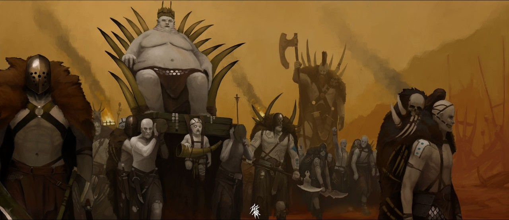

It is unknown when the Nocth first appeared on the surface of Granvalis Prime, but what is known is that they have been there for a very long time. Few other groups not controlled by an imperial authority call the surface home. The Nocth wear no protection against the chemicals that enshroud the surface, as they are immune to most and embrace the effects of the others. They are known to raid various envoys before disappearing into places unknown to surface authorities.
The Nocth are a collection of unorganized tribes that unite under a single belief and are led by one leader currently Carn. These many smaller groups make it difficult to dismantle the entire tribe, and if the leader is killed, they are often easily replaced.
